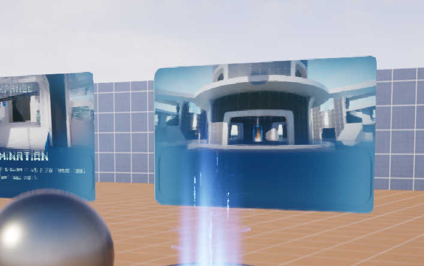

新建关卡
新建关卡的操作与原生没有区别
文件 > 新建关卡 > Basic
通常将地图资源保存在 /Maps 文件夹中
此时 运行关卡 会发现虽然我们什么都没设置, 但依然有一个可以操作移动的简易角色
而打开关卡中的 世界场景设置
找到 游戏模式 > Default Gameplay Experience > Default Gameplay Experience
修改值为B_LyraShooterGame_ControlPoints再次运行会得到和
ShooterGame一样的对战模式:
拥有基本射击游戏功能的可操控角色, 和自动生成的AI角色(但不会移动)
很显然 Lyra框架 替换了原版GameMode系统
而改用自建的一套Gameplay Experience系统
TODO: [站内文章: 游戏性](../experience)
配置文件
- 类型:
LyraUserFacingExperienceDefinition
简单来说这是 Lyra框架 定义的一个关卡信息类
储存了关卡资产对象位置, 还有关卡封面等信息
是 Map 对象的包装拓展
入口关卡通过该扫描配置类对象列出并载入关卡
使得 小型/副本式/遭遇战类 的关卡可以被自动检索与展示信息
新建
添加 > 其他 > 数据资产
选择 LyraUserFacingExperienceDefinition
通常将关卡配置保存在 /System/Playlists 文件夹中
修改
关键参数有两个
Map IDExperience ID
分别指定了关卡和游戏性资源
当指定了
Experience ID时
地图或项目默认游戏性将会被覆盖
其他参数影响可以参考 Shooter 中的示例关卡配置
使用
在新建的 GameFeature 层级中可能会无法找到对应资产
需要在插件配置中指定资产扫描 站内文章: 资产扫描
典型扫描配置
三合一数组快捷参数
((PrimaryAssetType="LyraUserFacingExperienceDefinition",AssetBaseClass="/Script/LyraGame.LyraUserFacingExperienceDefinition",Directories=((Path="/System/Playlists")),Rules=(CookRule=AlwaysCook)),(PrimaryAssetType="LyraExperienceDefinition",AssetBaseClass="/Script/LyraGame.LyraExperienceDefinition",bHasBlueprintClasses=True,Directories=((Path="/System/Experiences")),Rules=(CookRule=AlwaysCook)),(PrimaryAssetType="Map",AssetBaseClass="/Script/Engine.World",Directories=((Path="/Maps"))))
添加关卡配置扫描之后, 就能在入口关卡看到

同时添加游戏性配置和关卡资源扫描之后, 就能使用对应路径下的自定义资产